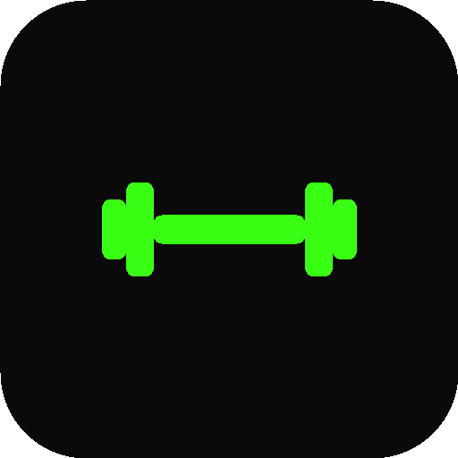

Tu app personal de rutinas de gimnasio: series, descansos, calendario y progreso. Sin internet, sin excusas.
Este manual te enseña a usar cada parte de la app. Léelo una vez; después te acompañará en cada entrenamiento.
La app es una página web instalable (PWA). Se instala una sola vez y después se usa como cualquier otra app, incluso sin internet.
La primera vez ves la pantalla de bienvenida. Escribe tu nombre y toca Empezar. Puedes cambiarlo después en Progreso → Configuración.
La app viene con una rutina de ejemplo ya cargada, basada en la guía De flaco a definido: Upper / Lower de 4 días.
| Día | Entrenamiento |
|---|---|
| Lunes | Torso A (pecho, espalda, hombros, brazos) |
| Martes | Pierna A (piernas y abdomen) |
| Miércoles | Descanso + pasos |
| Jueves | Torso B |
| Viernes | Pierna B |
| Sábado y domingo | Descanso + pasos |
Puedes cambiar todo esto a tu gusto (ver capítulo 5).
Funciona dentro de la app: cierra la ventana abierta, vuelve a Entrenar desde otra pestaña y, en pleno entrenamiento, abre el menú en lugar de salir. En la pantalla principal, el primer toque avisa "Presiona atrás otra vez para salir" y el segundo (dentro de 2 segundos) cierra la app.
| Pestaña | Para qué sirve |
|---|---|
| Entrenar | Pantalla de inicio: saludo, plan de hoy y botón para empezar. |
| Calendario | Planificar días de entrenamiento y descanso. |
| Ejercicios | Biblioteca con fotos e instrucciones. Crea los tuyos. |
| Calistenia | Rutinas completas con y sin implementos, progresiones y test de nivel. |
| Progreso | Historial, estadísticas, medidas, hábitos y configuración (⚙). |
Es la pantalla principal. Arriba verás un saludo según la hora, la fecha y cuántos días has entrenado esta semana (por ejemplo 2/4).
Si hoy es día de descanso, la app te lo indica y te recuerda cumplir los pasos y dormir bien. Si quieres entrenar igualmente, toca Entrenar de todas formas.
Al empezar se abre una pantalla a pantalla completa, pensada para usarla con una sola mano.
A la izquierda del botón verde está Deshacer (quita la última serie) y a la derecha Saltar (pasa al siguiente sin registrar).
El cronómetro general corre desde que empiezas. Toca el recuadro del tiempo (arriba, al centro) para pausar: el tiempo deja de contar mientras cambias discos, ajustas la máquina o buscas tu peso. Toca de nuevo para reanudar. Durante la pausa puedes cambiar repeticiones y peso con calma.
En Entrenar hoy toca Rutina automática. Verás el tiempo aproximado de la rutina. Deja el celular apoyado: la app avanza sola y tú solo escuchas.
En este modo se registran los pesos y repeticiones objetivo; puedes pausar, saltar una fase o salir del modo automático desde el menú ✕. Los ejercicios que no se pueden medir por tiempo (por ejemplo, "10.000 pasos") quedan fuera.
| Modo | Cómo funciona |
|---|---|
| Series seguidas | Haces todas las series de un ejercicio y pasas al siguiente. Descansas tras cada serie. |
| Circuito / rondas | Haces una serie de cada ejercicio seguidos y repites la ronda. Descansas al terminar cada ronda. La pantalla muestra "Ronda 1 de 3". |
El botón ✕ (arriba a la izquierda) abre un menú para activar o quitar sonido y vibración, seguir entrenando o descartar la sesión.
Cambia entre vista Mes y Semana con el selector de arriba. Usa las flechas para avanzar o retroceder, y toca el título para volver a hoy.
| Marca | Significado |
|---|---|
| ✔ verde | Día completado |
| Puntos de colores | Día planificado (un color por zona del cuerpo) |
| Luna | Día de descanso |
| Borde verde | Hoy |
Toca cualquier día. Se abre su ficha con estas opciones:
¿No pudiste entrenar? No hace falta armar la rutina de nuevo. Toca el día y elige Mover a otro día. Escoge el día destino y decide:
En Entrenar hoy aparece un aviso de Día perdido si en los últimos 3 días no hiciste una rutina planificada. Con Hacerla hoy la pasas a hoy y, si hoy ya tenías rutina, esa se corre sola al siguiente día de descanso. Omitir la descarta.
Para repetir una rutina que ya tienes, toca el día y elige Copiar rutina de otro día. Aparecen los días con rutina de la última semana y de las próximas tres. Al elegir uno, su rutina se copia a este día (el original no cambia). Si este día ya tenía rutina, la app te pide confirmar el reemplazo.
Cada ejercicio trae un dibujo con la posición INICIO y FINAL. En el cuadro final se ve más tenue cómo empezabas, y una flecha verde punteada indica hacia dónde se mueve la parte que trabaja. Debajo hay una frase corta con la técnica (por ejemplo, BOCA ABAJO en el curl femoral). Si prefieres, reemplázalo por tu propia foto (Editar → Galería o Cámara) y vuelve al dibujo con Quitar foto.
Incluye más de 60 ejercicios (33 de calistenia) precargados, organizados por zona: Pecho, Espalda, Piernas, Hombros, Brazos, Abdomen y Cardio.
Tus ejercicios llevan la etiqueta MÍO. Puedes editar cualquier ejercicio (también los precargados, por ejemplo para ponerles tu propia foto). Solo los ejercicios creados por ti se pueden eliminar.
Cuatro tarjetas: entrenamientos totales, días seguidos, entrenamientos de esta semana y volumen total. El volumen es series × repeticiones × peso. Si no pones peso, el volumen será 0. Debajo hay un gráfico con el volumen de tus últimas sesiones.
| Sección | Qué hace |
|---|---|
| Estándares de hoy | Toca el botón ⓘ de cada hábito para ver qué significa y cómo cumplirlo, y abre la Guía rápida con la rutina de mañana, el detox mental y el Método 3-4-5. En Mi Método 3-4-5 escribes tus 3 objetivos del año, tus 4 pasos de la mañana y tus 5 tareas de hoy; al completarlos se marcan solos esos estándares. Checklist de 8 hábitos diarios (rutina de mañana, método 3-4-5, entrenamiento, proteína, calorías, 10.000 pasos, sin pantallas, 8 h de sueño) y un resumen semanal. Con 80 % de casillas ya es una gran semana. |
| Peso, cintura, pasos y sueño | Registro semanal para ver tu evolución. |
| Calculadora de macros | Introduce peso y calorías de mantenimiento, elige el ajuste (déficit −300, −400, −500, mantener o superávit +250) y obtén proteína, grasa y carbohidratos diarios. |
Cada entrenamiento guardado muestra fecha, nombre, zonas, duración, volumen y tu nota. Tócalo para ver las series de cada ejercicio (repeticiones × peso). Dentro puedes eliminar la sesión.
Abre los configuración con el engranaje ⚙ de la pestaña Progreso.
Todos tus datos (rutinas, historial, ejercicios, fotos, medidas) se guardan solo en tu dispositivo.
metodo-rod-backup-fecha.json con todo.Borrar todos los datos restablece la app a su estado inicial. No se puede deshacer.
¿Funciona sin internet?
Sí, una vez abierta con internet al menos una vez. Todo se guarda en el celular.
No veo la versión nueva.
Cierra la app y ábrela dos veces. Si sigue igual, desinstálala e instálala de nuevo (antes exporta tu copia).
No suena el aviso del descanso.
Comprueba que el sonido esté en ON en el menú ✕ del entrenamiento y que el volumen del celular esté subido. Algunos celulares solo vibran con la pantalla encendida.
Me aparece "Acceso suspendido" o "Acceso vencido".
"Suspendido" lo decide el administrador: contáctalo. "Vencido" significa que pasaron más de 14 días sin validar: conéctate a internet y toca Reintentar. En ambos casos puedes descargar tu copia de seguridad desde esa pantalla.
Marqué una serie por error.
Toca el botón Deshacer de abajo a la izquierda.
Salí de la app a mitad de entrenamiento.
Al volver, la sesión continúa donde la dejaste.
Me avisa que el almacenamiento está lleno.
Exporta una copia y quita fotos grandes de ejercicios o el fondo.
Fuerza con tu propio cuerpo. La pestaña Calistenia tiene tres secciones.
Toca Meta: … (en Entrenar, en Calistenia o en Configuración) para elegir tu objetivo: Fuerza y definición, Fuerza, Bajar de peso o Ganar músculo. Cada meta explica cómo entrenar, comer y moverte, y la app ajusta series, repeticiones y descansos de las rutinas:
| Meta | Básicos | Accesorios | Descanso en básicos |
|---|---|---|---|
| Fuerza y definición | 4-5 × 4-6 | 8-12 rep. | 2-2,5 min |
| Fuerza | 4-5 × 3-5 | 6-10 rep. | 3 min |
| Bajar de peso | 8-12 rep. | 12-15 rep. | 45-90 s |
| Ganar músculo | 6-10 rep. | 8-12 rep. | 2 min |
Filtra por Sin implementos (solo tu cuerpo, en casa) o Con mis implementos (barra de dominadas, mancuernas, banca, barra con discos y bandas). Toca una rutina para ver sus días y ejercicios. Cada día tiene dos opciones:
| Rutina | Tipo | Días |
|---|---|---|
| Cuerpo completo | Sin implementos | 3 |
| Express 20 min (circuito) | Sin implementos | 1 sesión |
| Superior / Inferior en casa | Sin implementos | 4 |
| Fuerza calistenia: Empuje / Tirón / Piernas | Con implementos | 3 |
| Híbrido barra + pesas | Con implementos | 4 |
| Camino a las dominadas avanzadas | Con implementos | 3 |
| Fuerza + definición | Con implementos | 4 |
| Quema grasa · HIIT 25 min | Sin implementos | 1 sesión |
En calistenia no subes de peso: subes de variante. Cada patrón (empuje, hombros, tirón, piernas, core, cadera) muestra la escalera de ejercicios y la meta para pasar al siguiente. Por ejemplo, empuje: flexión inclinada → flexión → pies elevados → diamante → arquera.
Haz el test con descanso y buena técnica: flexiones seguidas, dominadas máximas, sentadillas seguidas y plancha en segundos. La app te dice tu nivel (Principiante, Intermedio o Avanzado), por qué ejercicio empezar en cada patrón y qué rutinas te convienen.